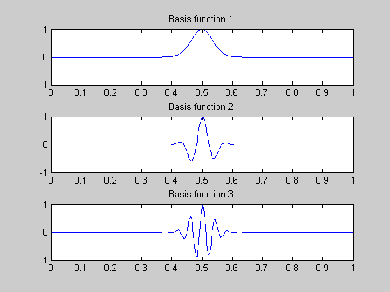
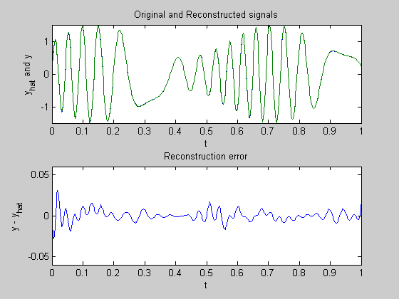
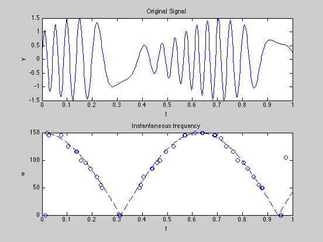

Figures 6.21-6.23: Basis pursuit using Gabor functions
clear
sigma = 0.05;
T = 0.002;
Thr = 0.001;
kmax = 30;
w0 = 5;
disp('Building dictionary matrix...');
A = sparse(401,401*61);
p = 1;
t = (0:T:1)';
for s = 0:T:1
x = exp(-(t-s).^2/(sigma^2)); x(find(x < Thr)) = 0;
A(find(x),p) = x(find(x));
p = p+1;
for k=1:kmax
c = x.*sin(w0*t*k);
A(find(c),p) = c(find(c));
p = p + 1;
c = x.*cos(w0*t*k);
A(find(c),p) = c(find(c));
p = p + 1;
end;
end;
disp('done.');
a = 0.5*sin(t*11)+1;
theta = sin(5*t)*30;
b = a.*sin(theta);
disp('Solving Basis Pursuit problem...');
tic
cvx_begin
variable x(30561)
minimize(square_pos(norm(A*x-b,2))+norm(x,1))
cvx_end
disp('done');
toc
p = find(abs(x) > 1e-5);
A2 = A(:,p);
x2 = A2 \ b;
M = 61;
sk = 250;
figure(1); clf;
subplot(3,1,1); plot(t,A(:,M*sk+1)); axis([0 1 -1 1]);
title('Basis function 1');
subplot(3,1,2); plot(t,A(:,M*sk+31)); axis([0 1 -1 1]);
title('Basis function 2');
subplot(3,1,3); plot(t,A(:,M*sk+61)); axis([0 1 -1 1]);
title('Basis function 3');
figure(2); clf;
subplot(2,1,1);
plot(t,A2*x2,'--',t,b,'-'); axis([0 1 -1.5 1.5]);
xlabel('t'); ylabel('y_{hat} and y');
title('Original and Reconstructed signals')
subplot(2,1,2);
plot(t,A2*x2-b); axis([0 1 -0.06 0.06]);
title('Reconstruction error')
xlabel('t'); ylabel('y - y_{hat}');
figure(3); clf;
subplot(2,1,1);
plot(t,b); xlabel('t'); ylabel('y'); axis([0 1 -1.5 1.5]);
title('Original Signal')
subplot(2,1,2);
plot(t,150*abs(cos(w0*t)),'--');
hold on;
for k = 1:length(t);
if(abs(x((k-1)*M+1)) > 1e-5), plot(t(k),0,'o'); end;
for j = 2:2:kmax*2
if((abs(x((k-1)*M+j)) > 1e-5) | (abs(x((k-1)*M+j+1)) > 1e-5)),
plot(t(k),w0*j/2,'o');
end;
end;
end;
xlabel('t'); ylabel('w');
title('Instantaneous frequency')
hold off;
Building dictionary matrix...
done.
Solving Basis Pursuit problem...
Calling SeDuMi: 61628 variables (0 free), 503 equality constraints
------------------------------------------------------------------------
SeDuMi 1.1 by AdvOL, 2005 and Jos F. Sturm, 1998, 2001-2003.
Alg = 2: xz-corrector, Adaptive Step-Differentiation, theta = 0.250, beta = 0.500
eqs m = 503, order n = 61128, dim = 61630, blocks = 3
nnz(A) = 7480146 + 0, nnz(ADA) = 252007, nnz(L) = 126255
it : b*y gap delta rate t/tP* t/tD* feas cg cg prec
0 : 7.63E+004 0.000
1 : -2.25E-001 3.37E+002 0.000 0.0044 0.9990 0.9990 3.00 1 1 5.1E-001
2 : 5.00E+000 1.13E+002 0.000 0.3363 0.9000 0.9000 1.00 1 1 4.8E-001
3 : 1.03E+001 4.80E+001 0.000 0.4240 0.9000 0.9000 1.00 1 1 4.1E-001
4 : 1.19E+001 2.71E+001 0.000 0.5649 0.9000 0.9000 1.00 1 1 3.5E-001
5 : 1.24E+001 1.69E+001 0.000 0.6219 0.9000 0.9000 1.00 1 1 2.9E-001
6 : 1.26E+001 1.15E+001 0.000 0.6804 0.9000 0.9193 1.00 1 1 2.4E-001
7 : 1.27E+001 8.48E+000 0.000 0.7392 0.9000 0.9381 1.00 1 1 2.0E-001
8 : 1.28E+001 6.76E+000 0.000 0.7972 0.9000 0.9491 1.00 1 1 1.7E-001
9 : 1.28E+001 4.86E+000 0.000 0.7183 0.9000 0.9070 1.00 1 1 1.4E-001
10 : 1.28E+001 3.77E+000 0.000 0.7766 0.9000 0.9488 1.00 1 1 1.1E-001
11 : 1.28E+001 2.60E+000 0.000 0.6888 0.9000 0.9039 1.00 1 1 8.4E-002
12 : 1.28E+001 1.85E+000 0.000 0.7107 0.9000 0.9442 1.00 1 1 6.3E-002
13 : 1.28E+001 8.77E-001 0.000 0.4746 0.9326 0.9000 1.00 1 1 3.2E-002
14 : 1.28E+001 5.59E-001 0.000 0.6379 0.9000 0.9143 1.00 1 1 2.1E-002
15 : 1.28E+001 2.92E-001 0.000 0.5220 0.9267 0.9000 1.00 1 1 1.1E-002
16 : 1.28E+001 1.82E-001 0.000 0.6240 0.9000 0.9085 1.00 1 1 7.0E-003
17 : 1.28E+001 9.48E-002 0.000 0.5204 0.9000 0.9152 1.00 1 1 3.7E-003
18 : 1.28E+001 4.77E-002 0.000 0.5033 0.9055 0.9000 1.00 1 1 1.9E-003
19 : 1.28E+001 1.48E-002 0.000 0.3097 0.9000 0.9019 1.00 2 2 5.7E-004
20 : 1.28E+001 2.26E-003 0.000 0.1529 0.9054 0.9000 1.00 2 2 8.8E-005
21 : 1.28E+001 1.01E-004 0.000 0.0449 0.9900 0.9900 1.00 2 2 3.9E-006
22 : 1.28E+001 2.10E-005 0.000 0.2075 0.9000 0.9023 1.00 3 3 8.2E-007
23 : 1.28E+001 4.34E-006 0.000 0.2065 0.9029 0.9000 1.00 3 3 1.7E-007
24 : 1.28E+001 1.03E-006 0.000 0.2373 0.9087 0.9000 1.00 3 3 4.0E-008
25 : 1.28E+001 3.41E-007 0.000 0.3309 0.9069 0.9000 1.00 3 3 1.3E-008
iter seconds digits c*x b*y
25 1340.2 7.6 1.2845156027e+001 1.2845155686e+001
|Ax-b| = 4.2e-011, [Ay-c]_+ = 0.0E+000, |x|= 2.8e+000, |y|= 1.4e+000
Detailed timing (sec)
Pre IPM Post
3.614E+001 1.340E+003 3.755E+000
Max-norms: ||b||=1.497811e+000, ||c|| = 1,
Cholesky |add|=0, |skip| = 0, ||L.L|| = 3303.62.
------------------------------------------------------------------------
Status: Solved
Optimal value (cvx_optval): +12.8452
done
Elapsed time is 1969.236462 seconds.
  